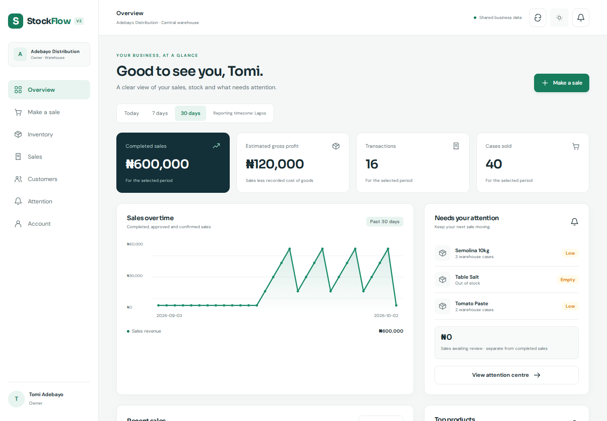
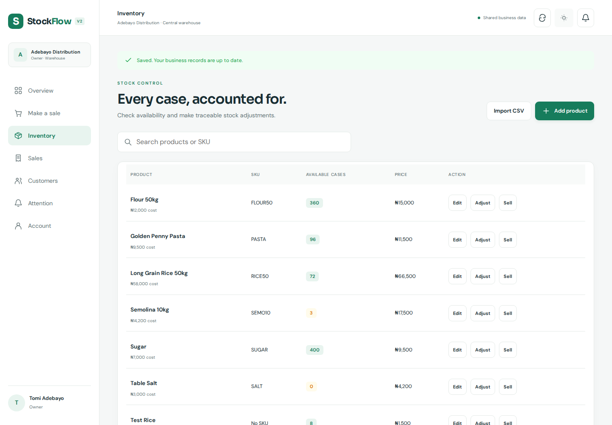
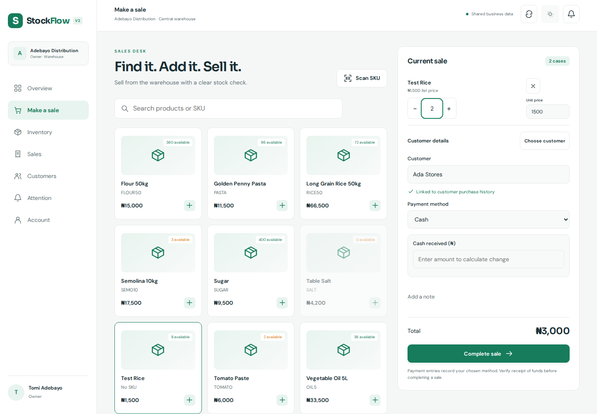
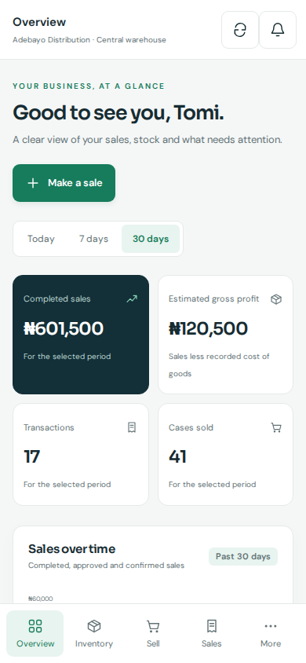
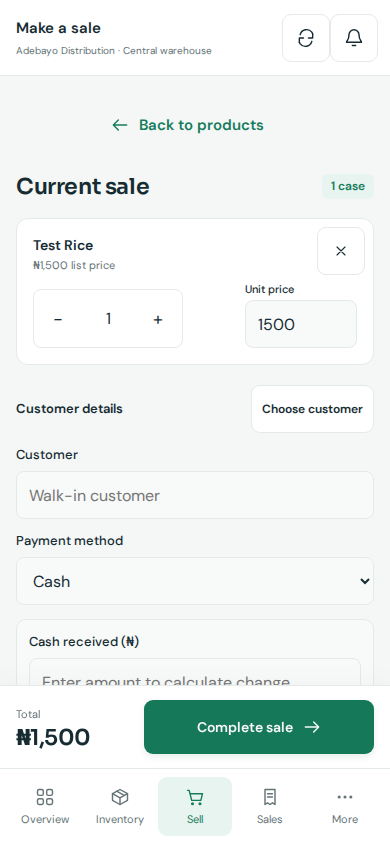

Know what's available.
Find products by name or SKU. Check warehouse stock, add opening quantities and record adjustments with a reason.
Know what's in your warehouse, what your reps hold and what you've sold. StockFlow brings your daily business into one clear workspace.
14-day trial · No card required

Stock should move with a record. Sales should have a receipt. And your business overview should tell the same story as the transactions behind it.
Find products by name or SKU. Check warehouse stock, add opening quantities and record adjustments with a reason.
A focused sales desk keeps products, quantities, customer details and payment method together. Open the resulting receipt straight away.
Completed sales, estimated gross profit, recent transactions and stock alerts help you choose what to do next.
Keep product details tidy and stock changes traceable. Your warehouse and each rep's allocated holdings have their own context.

Stay on one sales desk from product search to receipt. StockFlow records the selected payment method; funds are received through your existing cash, bank or card process.

Manage warehouse products, record direct sales, keep customer details and see completed business activity without jumping between spreadsheets.
Set up your business ↗Owners, managers and reps work with StockFlow's existing stock requests, holdings, dispatch debt and approval processes. Rep credit sales stay separate from completed sales.
Talk through your workflow ↗

The V2 mobile workspace brings your dashboard, products, sales, customers and receipts into a layout designed for touch.
Screens show the real V2 interface with test data. The mobile app is not yet available in app stores. Release availability will be shared here.
Add the essentials first. Your business can grow into StockFlow's wider operations as you need them.
Register, verify your email and choose whether you manage sales yourself or work with reps.
Enter the name, cost, selling price and opening stock. Add a SKU when you're ready.
Choose the product, quantity, customer and payment method. Complete the sale and open its receipt.
Check stock availability and your business overview. Use the records to plan your next move.
V2 connects your sales to stock movements and records sensitive changes so you can review what happened.
Know which business and stock context you're operating in.
If a checkout is interrupted, retry it to retrieve the original sale result.
Completed sales and recorded cost snapshots feed the V2 business overview. Missing cost data is shown clearly.
Start with the existing 14-day trial. After the trial, talk to StockFlow about pricing for your business.
V2 workspaces are a release preview until the upgrade completes verification. Your existing account and operations remain the starting point.
Get familiar with your stock, sales and business records.
Nigerian distributors, wholesalers and owner-run businesses that manage warehouse stock and sell by the case. It supports solo operations and teams with managers and reps.
Yes. They were captured from the working V2 interface during isolated workflow tests. The business names and figures are illustrative test data. V2 is being prepared for release.
The sales desk records cash, bank transfer or card/POS as a payment method. It does not process a bank transfer or charge a card. Verify funds through your payment provider before completing a direct sale.
The V2 checkout requires a connection to validate stock and save the transaction. Keep your current cart open during an outage. If a checkout result is uncertain, retry it using the original request rather than creating another sale.
The current product tracks a central warehouse and stock allocated to reps. Independent branch inventory and tracked branch transfers are outside the current V2 release scope.
A dedicated mobile workspace is being built with native camera integration. A signed, verified app-store release is still in preparation. These screenshots do not imply that a store release is already available.
14-day trial · No card required